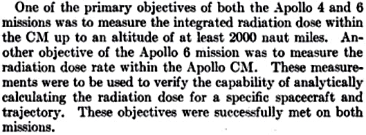
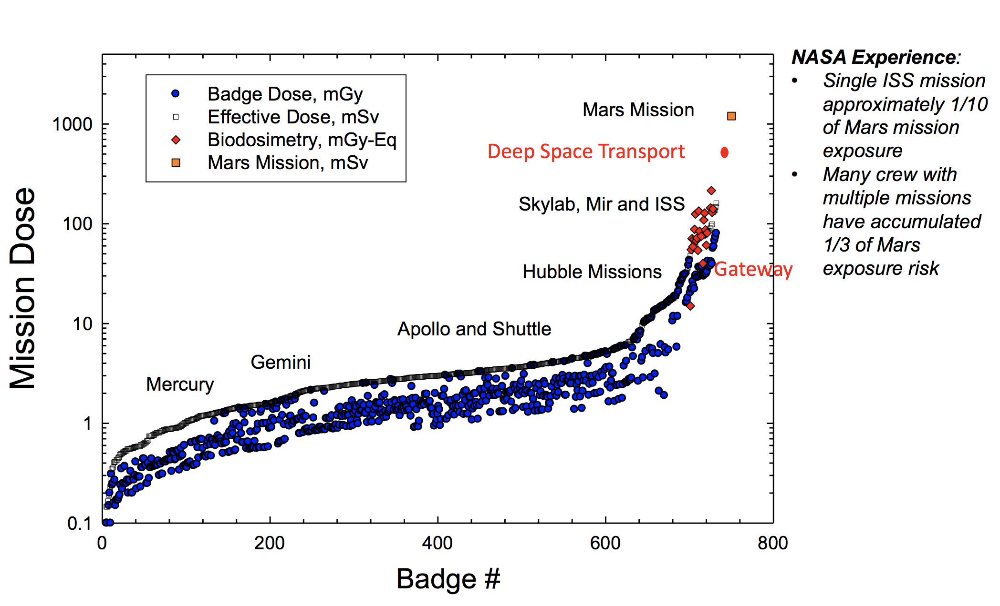
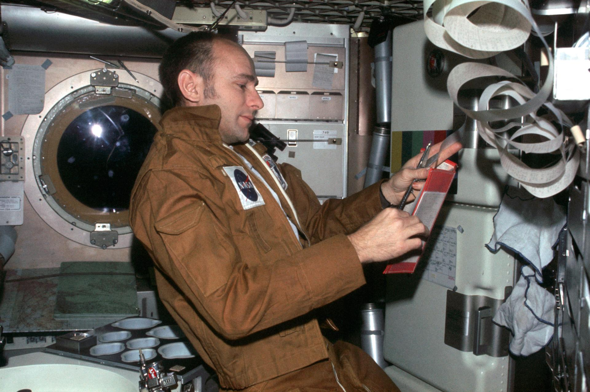
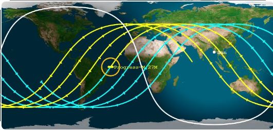

The lunar landings, which took place between 1969 and 1972, were preceded by a long preparation process that lasted at least 11 years, which began with the first launch of the primate Gordo (1958), followed by the launches of other primates, Sam, Ham, Enos etc. within the Mercury program (1959).
Although America had been preceded in the first orbital flight by the Soviet Union with Yuri Gagarin (1961), NASA, before sending astronauts into orbit, wanted to complete tests on the physiological response to flights in organisms similar to humans, such as primates. In particular, the gravitational stress related to take-offs, prolonged weightlessness and subsequent re-entry forces were measured, all situations still unknown at the time. The animals were equipped with many sensors that measured vital parameters and obviously the radioactive doses received were also tested, albeit with reference to low orbit.
These tests were followed by Shepard's first suborbital flight (1961) and the first NASA orbital flight, that of John Glenn in 1962. Many other missions followed, and eight years after the launch of Gordo, as part of the Gemini program that developed the rendezvous technique between independent space carriers, there was the first entry into the Van Allen belts (VAb) of a human crew.
In fact, Gemini XI reached an altitude of 1368 km in September 1966. In this short excursion into the radioactive zone, the physiological reactions of the two astronauts (Conrad and Gordon) were tested by means of accurate blood tests and two experiments were implemented:
The Gemini XI S-4 Spaceflight-Radiation Interaction Experiment: The Human Blood Experiment
The Gemini-XI S-4 Spaceflight Radiation Interaction Experiment II
in which an attempt was made to evaluate the presence of any abnormalities in human blood cell cultures and the behavior of a rapidly reproducing mold, the "neurospora crassa", under the simultaneous effect of radiation and weightlessness.
With the Apollo program, the tests were even more extensive, in particular with Apollo 4, (November 1967, unmanned mission), a command module identical to the one used in subsequent missions was pushed up to 18,100 km of altitude, entering abundantly into the most dangerous area of the VAb, (i.e. the first belt, which extends up to 12,000 km of altitude) and the re-entry into the atmosphere at a speed of 43,891 km / h was simulated. As many as 4098 devices were implemented, including on-board instruments and sensors, which collected a large amount of information, including that relating to the radioactive levels measured by the exposure meters during the double passage through the VAb.
Together with Apollo 6, which went up to 22,550 km, so well beyond the first belt and in the most intense area of the second, the unmanned tests were concluded and as written in this NASA document, the radioactive level was measured in depth in all its aspects.

Apollo 4 and 6 radiation analysis
As stated in the image "These objectives have been successfully achieved by both missions".
But then why wasn't the entire extension of the belts tested, up to 40,000 km? Because with an unmanned command module (CM) they crossed the most dangerous area of the VAb, making sure it was a safe route, and anyway, before the landing, there were two other missions, Apollo 8 and Apollo 10 that took 6 astronauts into lunar orbit, where it was possible to accurately measure the total radioactive level absorbed by the astronauts along the entire route that would lead to the first landing,
At this point it is clear that question no. 1 of the documentary reflects a total ignorance about the history of space exploration, and deliberately remains silent on the incredible amount of technical-scientific data:
WOTM- Radiation Environment, Biomedical Results of Apollo
obtained from the missions that preceded the moon landings, technical data that obviously also concerned the Van Allen belts and the radiation that could be absorbed during their crossing and beyond.
From here it is obvious that sending more monkeys to test the VAb, as the documentary suggests, would not have produced any more information than that obtained from the geiger counters and dosimeters installed in each mission, in fact anyone, who for professional reasons works in radioactive environments, does not carry a monkey attached to their lab coat, but a personal dosimeter and entrusts that instrument with their safety with respect to the risk of radiation. Exactly what NASA did in all its missions, first without and then with crew, and what it has still done with the Artemis I mission.
However, tests on animals in the Van Allen belts were also done by the Soviets in 1969 with the Zond 7 probe and its 4 turtles and in 1966 with Kosmos 110, where two dogs and several plants were put to orbit in an elliptical orbit that periodically entered the inner belt at almost 900 km altitude. During the 22-day mission, the spacecraft traversed this region approximately 330 times.
The dogs, despite suffering from dehydration, returned safely and recovered completely without detecting any type of radiation damage. Here is a video illustrating a Russian news program of the time with dogs on the return of the mission.[1966: "Kosmos-110" satellite; dogs - Ugolyok and Veterok]
To the aforementioned missions (Apollo 4 and 6), we must add all the other unmanned missions that have arrived in lunar orbit and some even landed on the moon, such as the Ranger program (1964 – 3 missions) , the Lunar Orbiter program (1966 – 5 missions), and the Surveyor program (1966 – 5 missions with moon landing)
it should be emphasized that the lunar missions added other very useful data about the radioactive environment on the lunar surface.
In Van Allen's words, the question of the documentary is totally misleading. The scientist published his studies on VAb in 1959 (publication cited by the documentary) and that is at the dawn of the realization of orbital flights. In fact, the flight of the first orbital satellite, Sputnik, was only two years earlier, while the year before publication the first orbital flight of an American satellite had been made: Explorer 1. The importance of Van Allen's discovery was to demonstrate that not all Earth orbits were available for use by satellites, as at some orbital altitudes the radiation was so intense as to destroy electronic equipment and those altitudes had to be considered precluded to both instrument and human orbital flight.
It was historically evident that at that time we were referring to the implementation of orbital satellites that would revolutionize communications, meteorology, geolocation, as well as being a privileged tool of military espionage, and that no one yet imagined being able to go to the Moon.
Yet as explained in this short video, [Youtube], Van Allen was far-sighted and although he ruled out the possibility of orbital routes in the belts in his name, he did not rule out their crossing at all, as we can also read from this excerpt taken from his own document.

Van Allen then confirmed his judgment more than twenty years later, in 1981 and published a document that can still be downloaded by his university and of which an image is added with an excerpt concerning the Apollo missions.

[Radiation Belts of the Earth]
As is evident from his two writings, Van Allen only ruled out the possibility of orbital flights within the belts that bear his name, while he wrote and repeated at very different historical moments and more than 20 years later, that with appropriate precautions, these belts could be overcome without any particular problems.
These references by Van Allen to the crossings of the belts in 1959 and then directly to the Apollo missions in 1981, are incontrovertible because they explicitly indicate the crossings and lunar missions and in the light of what has been explained in this answer, we can believe that NASA possessed all the useful information to make a trip with astronauts to the point of view of protection against radiation and not only reasonably safe (from the point of view of protection against radiation and beyond) to the Moon.
Questions no. 2 and 3 are disarmingly naive. They focus on the dangers posed by the Van Allen radiation belts, when during the missions there were moments of danger much greater than that crossing, and I am referring to take-off, to the landing on an unknown and impervious terrain, to the departure from the Moon, to the rendezvous between the LEM and the command module, to the re-entry into the atmosphere with temperatures on the heat shield of thousands of degrees, and finally the opening of the parachutes before impact at sea.
Why did NASA undertake such risky activities? Simply because in those years there was the Cold War against the USSR, a war that in some areas of the globe, such as Indochina, had turned for America into a war waged against the expansion of some communist regimes supported by the USSR and China, and for this reason the American government, together with NASA, took into account risks and benefits, and committing themselves to minimizing the former, they decided that the competition for the conquest of space, (among other things launched by the USSR with the first satellite Sputnik, with the first human orbital flight, with the satellites that first reached the Moon, Mars and Venus, etc.), had to be taken up in a perspective of challenge, and given the initial delay accumulated, could only be won on the most ambitious front, namely a lunar landing with astronauts, even if this choice would have entailed risks that in peacetime would have been unjustifiable.
For this reason, the risks associated with the conquest of the Moon cannot be understood, unless they are viewed within the context of this historic rivalry, where not only two nations were confronting each other, but rather two opposing ideologies, two antithetical ways of understanding society and managing the economy, and above all two models to be exported to the world: liberal capitalism on one hand and socialism in the Soviet version on the other.
Even today, entering the belts remains a delicate operation, as NASA engineer Kelly Smith rightly reminds us, but thanks to previous knowledge, studied routes and preliminary unmanned tests, the risk can be managed and made acceptable. The engineer refers to the tests of the (at the time) new Orion capsule, successfully concluded in 2014, tests obtained in the passage within the bands up to 5700 km of altitude, with a procedure very similar to that implemented for Apollo 4 and 6 with an unmanned CM. Why did Orion have to redo the tests? Weren't those already carried out with the Apollo CM enough?
Orion is very different from CM Apollo so much so that it can accommodate twice as many astronauts (6 in low orbit and 4 over), so new tests were essential. The Artemis 1 mission has further confirmed that the radioactive doses measured by the dummies inside the Orion capsule, during the crossing of the VAb, are acceptable, especially when compared to the much higher doses of radiation taken by astronauts on the ISS, during the long months of stay in space.
Here is a table:

NASA's Spaceflight Radiation Exposure Standard - National Academies of Sciences, Engineering, and Medicine, 2021.I would add, that to understand the engineer's words "we have to solve these challenges before we can send people to this region of space", as a confession that unintentionally escaped the engineer, that no one has ever passed the belts, compared to the more obvious, we have to complete the tests with this new capsule before putting people in it to send them to that region of space", is really misleading. In fact, it would be tantamount to listening to the words of a hypothetical engineer talking about self-driving cars and at some point saying: "we have to solve these challenges before we can send people into city traffic," assuming that those words confess that no passenger has ever entered city traffic in a car, and not the other way around that no passenger entered city traffic with that self-driving car being tested.
Really... sticking to such rhetorical misinterpretations of an engineer's remarks who, among other things, plans a capsule for missions not only to the Moon, but also to Mars is, frankly, unconvincing.
Those who have asked themselves this question should feel a little embarrassed, because they show thatthey do not have a great deal of expertise on this subject.
To think that the Van Allen Belts had been a problem only for the Apollo missions is disheartening. To the author of the question I give this shocking news: the Van Allen belts are not around the Moon, but around the Earth, so all astronauts who have completed even a single Earth orbit must be well aware of them, because they are the limit that is better not to exceed during their orbits, as are the highway emergency lanes for a professional driver. But there is more.

Alan Bean was an astronaut who spent 59 days on Skylab 3 and as for the ISS, Skylab 3 orbited at an altitude of 435 km with an inclination of 50° (altitude and inclination very similar to those of the ISS), and for this reason, just like the ISS, it inevitably and recursively encountered the Van Allen belts in the South Atlantic anomaly. Not only that... in Skylab even more than the ISS, (wider and more robust), the protective measures, during those transits, were even more important.
(in fact, the astronauts of that mission were the first to talk about visual phosphenes).

At this point, to suppose that Alan Bean did not have a lapse of memory, is to deny that he was an astronaut, that a Skylab program ever existed, and consequently that an ISS exists which enters the South Atlantic Anomaly, and so on. Therefore, insisting on not considering his a lapse of memory is a perfect flat-Earther objection, not a moon-hoaxer one, because it would lead to denying the existence of astronauts who go into orbit, of whom Bean is certainly a prominent representative.
Now, just to avoid passing as flat-earthers, it is more than obvious to have to suppose that it was a lapse of memory that confused Alan Bean, and it is not excluded that he momentarily confused (with the contribution of advanced age) the "Van Allen belts" with the "asteroid belts", and in any case I repeat the concept: the Van Allen belts are terrestrial belts and all astronauts inevitably have to know them, because whether they have been in orbit, whether they have been on the ISS, or whether they have even orbited right inside them—like the three astronauts of Polaris Dawn recently did — all astronauts must take them into account, as their physical safety and future health depend on it.
But what is even more embarrassing is that the person who brought up this question, doubting that Alan Bean had suffered a memory lapse, is the very same person who, due to a similar memory lapse as a young assistant photographer, got fired for leaving rolls of film from an important photo shoot under an airport X-ray scanner.
As I said at the beginning... an embarrassing question.
Chapters: